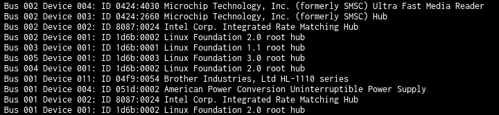
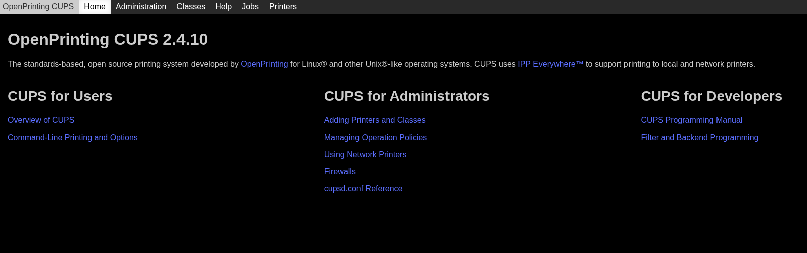

Configuring CUPS in TrueNAS SCALE
DATE
I've been working on setting up a little HP Microserver Gen8 as a NAS, media server and little selfhosted services box, and recently spent a while getting my USB printer hosted and connected to it so I can remotely print from any pc on the LAN without the hassle of taking the printer to my pc or vice versa, hooking it up and dealing with weird driver issues. I eventually got it working but it took more time and suffering than it frankly should have done so I figured I'd document my suffering for the next poor soul frantically googling "CUPS Truenas" trying to figure out how to make things work. All information here is correct as of the date of this post, using TrueNAS SCALE 25.04, I do not guarantee its long term accuracy as things may change in TrueNAS or CUPS.
TrueNAS Setup
I'm using the built in TrueNAS Docker virtualisation system (called "Apps" in TrueNAS). Alongside a library of ~250 community supported containers you can also pull and run any container from Docker Hub or suchlike with no hassle at all. There are a couple of popular Docker images for CUPS, but I chose this one as it's resource usage was lower than other popular ones. When running it consumes as little as 5MB of RAM, and every byte counts on my litle Microserver as it hasn't got much to spare. The first step you need to do is connect your USB printer, go to the TrueNAS shell in "System" -> "Shell" and type "lsusb" to list the USB devices connected. You will see a load of "Bus 00X Device 00Y <some usb device info here>". Find your printer in the list and note its bus and device number. NB: Some printers love to auto power off and de enumerate themselves, when they re enumerate they will have a new device number, it's also possible if the server reboots the device ID will change. The solution for this is pass the whole bus or just all USB devices to the Docker container but that's not great for security so you need to keep that in mind. Ideally you could pass devices to docker containers using their VID and PID identifiers but AFAIK that's not a thing. On my server the printer shows up on bus 001, device 011.

To initialise the custom app click on the "Apps" tab in the main TrueNAS then go to "Discover Apps" -> "Custom App". Here you'll be able to configure all the pertinent settings to the container. First give it a name (I just used "cups" for simplicitys sake), in "Image configuration for the image repository use "anujdatar/cups", then in container configuration give it a hostname (I again used "cups"). Timezone should be configured by default if you have the timezone set up properly on TrueNAS, change restart policy to "unless stopped" then hit "add" on devices. This will pop up a dialog with two text boxes "Host Device" and "Container Device". In both boxes enter "/dev/bus/usb/00X/00Y" Where X is the bus number you recorded earlier and Y is the device number. If you're passing a whole bus then omit the 00Y from the end. Skip the "Security Context Configuration" section and then in the "Network" section click "Add" on "Ports" and enter 631 for both the host and container ports. Leave the rest of the networking and "Context configuration" settings at their defaults. For the storage a persistent storage volume isn't technically required, however you may go mad having to reconfigure it every time you restart the container so setting one up is highly recommended. Click "Add" in storage configuration, set type to "ixVolume", mount path to "/etc/cups" and dataset name to "cups_conf". This will preserve all CUPS configuration files in the event of a container restart. Once you're done with that scroll down to the bottom and click install. It'll pull the Docker image, build and set it up. Error messages during this process are not very descriptive, check the device and bus numbers are correct as that was a problem I encountered during container setup, if the device doesn't exist it can't pass it to the container. Once the container is online check you can access the CUPS webpage at <your-server-ip>:631. You should see the following page:

CUPS Setup
This was the bit that tripped me up the most, getting it actually printing would never succeed and the CUPS error log would show authentication issues (especially when printing from Windows as it doesn't seem able to actually prompt for credentials on Windows). The solution I ended up coming up with was fairly awful, but did work. DISCLAIMER: This disables all the authentication, absolutely all of it including for the admin console. You should only run this configuration on networks you trust inhabited by devices and people you trust implicitly. If you've got a mischievious child, questionable IoT doodad or something else on your network I hold no responsibility for any negative consequences as a consequence of using this configuration. Firstly navigate to the CUPS server webpage, go to the "Administration" tab, authenticate with the default username and password (admin and printer) click "Edit configuration file" then replace the default file with the following.
# CUPS Configuration File
# Listen on all network interfaces (IPv4)
Listen 0.0.0.0:631
# Enable printer sharing
Browsing On
BrowseLocalProtocols dnssd
DefaultAuthType None
WebInterface Yes
# Allow all clients to access printers without authentication
<Location />
Order allow,deny
Allow all
</Location>
# Printer operation policies (still allow all for printing)
<Policy default>
<Limit All>
Order allow,deny
Allow all
</Limit>
</Policy>
Click "Save configuration file" and then wait for it to reboot, once done confirm you can still access the Administration page, it shouldn't prompt you for a password this time.
Then you need to add your printer to the CUPS config, assuming a USB printer that you passed through properly when setting up the container you should be able to go to "Administration" -> "Find New Printers". Wait a few seconds and you should see a couple options, two virtual printers and (hopefully) your USB printer. Click "Add This Printer" next to your USB printer, it should open a page with "Description" and "Location" already filled out, hit "Continue", then select the make and model of your printer in the appropriate dialogs and click "Add Printer". With that done on the top menu bar click "Printers" and you should see the printer you jut added in the list, click on it and you should see a page for your printer with the printer name and "Idle, Accepting Jobs, Not Shared". Click the "Maintenance" drop down then click "Print test page" and confirm the printer prints. This will let you know you got all the device setup working perfectly. The final thing you need to do is tag the printer itself as shared. Whilst there was a checkbox for that when adding the printer it doesnt seem to work. So what I did instead was run a manual shell command to force it shared. Note down the printer name in the CUPS window (it's in the webpath after /printers/ too), return to the TrueNAS apps window, click on your CUPS container, open the shell and in the shell window execute this command
lpadmin -p <printer-name> -o printer-is-shared=trueExit the shell then click the restart container arrow in TrueNAS to get the container reset. At this point if you return to the printer page you should be able to see it's status changed from "Idle, Accepting Jobs, Not Shared" to "Idle, Accepting Jobs, Shated". At this point all the server side legwork is done and you can configure clients for printing to the server.
Windows Configuration
Windows will very happily print to a shared CUPS printer,
Link text